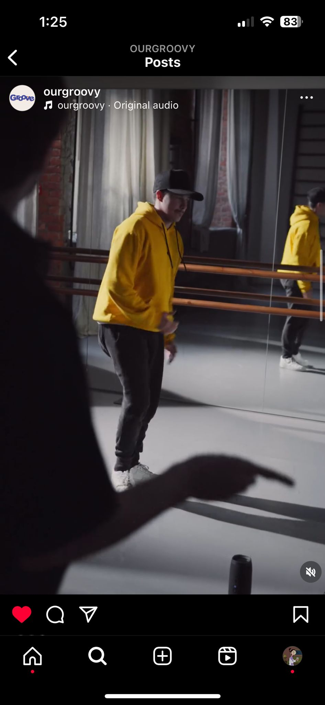

General Information
This branded website is publicly available at: https://ourgroove.github.io/Groovy/
This website was created by:
- Preslav Yanev (214006)
- Maria Shtarbeva (220024)
- Mihaela Rashkova (220120)
- Ralitsa Siderova(220400)
Content
Please clarify here the match between students and pieces of content. Make sure that you provide a link to the correct page within the website
| # | Student ID | Value | Name and link of content |
|---|---|---|---|
| 1. | 220024 | Persona | Persona |
| 2. | 220120 | Services | Services |
| 3. | 220400 | Values | Values |
| 4. | 214006 | What is Groove? | What is Groove? |
Production
Design Elements
Please provide a list of design elements alongside their justifications:
-
A colour scheme (with HTML colour codes, which must be consistent with your final website)
— see the example below from the BUas brand book:
- #FF510C is bright and energetic: Orange is associated with optimism, confidence, enthusiasm, playfulness and agreeableness. Because it is a bright and vivacious colour, it may help people feel outgoing or even bold. It is invigorating and evokes energy. …
- #3333C2 Bright blue is the colour of the sky on a clear day and is often associated with feelings of happiness, optimism, and hope. …
-
#2BADB8
#B5C5CB
#EEE7E4:
This shades of grey are associated with balance, stability, and neutrality. They convey a sense of reliability and professionalism. French Gray suggests refinement and classic taste, making it suitable for our brand that is aiming for a vintage image, similar to our name “Groove” . But simultaneously the soft hue of the Isabelline evokes feelings of cleanliness and clarity, making it ideal for also maintaining a somewhat modern look. What is more, the Moonstone Turquoise combines the calming properties of blue with the invigorating aspects of green, highlighting a balance between relaxation and vitality. This balance mirrors the holistic approach to physical health and well-being promoted by our platform, where stretching is integrated seamlessly into the energetic atmosphere of hip-hop dance …
Fonts: Rustica extra bold and Effra CC Black:
Rustica Extra Bold stands out with its bold strokes and distinctiveness, embodying unity and self-expression within the community, in the context of a platform tailored to the needs and wants of hip- hop dancers this font blends perfectly with the preferences of artistic and bold young people. Meanwhile, Effra CC Black contributes to this ethos with its bold appearance and modern style, promoting confidence, inclusivity and fostering a dynamic environment suitable for both learning and self-expression, resonating with the rhythm and energy of hip-hop dance.
-
User Interface Elements:
Implementing a simple grid layout on the homepage helps organize content effectively, allowing for clear navigation and visual hierarchy. Such grids enable the presentation of diverse content types, such as featured articles, video tutorials, and upcoming events in a more organised way. It is also designed with a colour palette that matches recent trend choices among the Gen. Z hip- hop dancer community.
Carousel:
Incorporating a carousel feature for showcasing featured content enhances user engagement and interaction. It enables the platform to showcase actual dancers of the community, their stories, capturing users' attention and encouraging exploration, this content is perceived as both inspirational and educating, which is connected to our values- education and support. This element contributes to a similar layout as Instagram and therefore to a more intuitive UI design since the most used social media platform by our target audience is Instagram. The visuals also showcase the unique value preposition of our brand: Fostering a sense of belonging within the hip-hop community around the underestimated habit of stretching.
Navigation bar:
Organizing the menu with clear and intuitive labels enhances navigation efficiency. Categories such as "Home", "Services" or "About us" cater to the specific needs of users when they first enter the page, enabling seamless navigation and exploration of the platform's offerings. This user-centric approach facilitates easy access to relevant content and is also similar to social media platforms, as a result the simplicity of the bar lets the users focus on the content of the platform itself rather than overwhelming from the navigation.
Homepage Content Distribution:
Content units on the homepage are distributed strategically to provide a balanced overview of the platform's offerings as well as keep the user’s attention through visuals and short copies. This includes featuring recent events, and informative as well as motivating text paragraphs. The layout aims to capture users' interest immediately and encourages further exploration as well as to make the user feels like they are already part of the collaborative community of “Groove” (one of our values) in a way that is similar to the communication strategy of our brand.
Credits
Please provide links and/or credits for third-party elements including:
- HTML templates if these are different from this one (buas-media-interactive/prj4-group-template)
- The source code for UX patterns other than the ones provided by the “Bootstrap” library (see getbootstrap.com/docs for a list of such patterns)
- Images that were not produced by students themselves, including when crediting is not mandatory (in other words, we ask you to credit Unsplash images)
Testing Report
A testing protocol has been conducted with the high-fidelity prototype. The team asked people from the target audience- hip- hop dancers in their 20s who live in the Netherlands a couple of questions regarding their user experience navigating the platform.
The people were asked whether they recognise what the main objective of the website is, they were asked to navigate through the home page and to look for the services the brand provides as well as to read and think aloud if the information is clear and understandable for them.
From the conducted interviews it has been concluded that the users get a clear idea of the main concept behind “Groove” within the first seconds of navigating through the home page. All of them were able to visit the “About us” page, to return to the “Home page” as well as to go through the services provided on the website. The majority of the testing users mentioned they didn’t have any problems with the website, what is more they enjoyed to colour palette as well as the supporting visuals, which help get a clearer idea of what the community of “Groove” is. However, some of them pointed out that there are improvements to be made. Although they are not fatal for the UX they are still valid for the overall navigation. The most crucial point of improvement would be to use more animations, so they are more stimulating for the users, nowadays many websites use more immersive graphics in order to keep the users in the platform for a longer time. Some of the testing users realised there isn’t any option for the free services the platform provides. Another point that would contribute to the user experience is to incorporate a “Back button”, this would be very beneficial for the intuitive navigation of the user and could prevent many negative associations the users tend to have when they come across an obstacle. Finally, one of the participants mentioned he finds it difficult to read one of the values since it is in dark blue colour, so the dark bold text located in the blue bubble isn’t easy to read. Some more findings based on thorough reflection of the team were that the fonts on the website are logically connected to brand, its values and its target group, however due to the bold letters they are not easily readable and as a result contribute to a not fully effective comprehension of the text.
Marketing
Context of campaign and promotional activities
To create a successful marketing campaign every brand should understand their target audience and focus on the consumer instead of the brand or product. The target audience for the brand and the marketing campaign is team hip-hop dancers, aged 20-28, who live in the Netherlands with no preferences about gender. They are outgoing people, dedicated to the art of hip-hop dancing and their teams. They focus on the dance routines and strive to be the best dancers and push towards perfection.
The marketing campaign of Groove aims to portray the brand on Instagram as a human instead of a corporate page, helps to connect to the target audience and create a relationship with them. This way we put the brand amongst them instead of observing from the side. What we mean with “humanizing” the brand is – using their language when creating the content and include ourselves with them by using” we” and “together”. Additionally, the content is created with the values of the company in mind and incorporated in the visuals and the text executed.
The big idea of the marketing campaign is Groove it up. When you throw on your favorite comfortable dancing clothes and go straight to dancing you can ignore the importance of proper stretching. Diving into the fun part can be tempting, that is why Groove is offering both – preventing injuries by grooving it up. Showcasing stretching in a fun and engaging way can encourage dancers to get educated on the topic and importance of it. Starting slow and steady when it comes to educating can help to keep the user engaged rather than just overwhelm them with dry information.
For the purpose of this campaign we created a content calendar with detailed information about the all the content that needs to be executed. Including the posting date, the status (pending or posted), the caption, visual description and format.
Message
The message of the campaign is to show the importance of stretching, while making it fun, so it can blend seamlessly into the consumers dance training.
Promotional activities
A promotional activity executed during this campaign is the hashtag #grooveitup, used on different content with call to action towards the viewers, so they can share their favorite routine/ritual before training. Since we as a brand are offering a platform that focuses on prevention of injuries, we suggest to the users to stretch before training. Keeping this in mind, we wanted to create engagement by prompting our viewers to share what are they currently doing before their training. The goal of this promotional activity is to first focus on the user and make it entirely about them, what are they doing and providing a platform for them to share more of themselves where they can be seen and heard. The second idea behind this activity is to introduce Groove as something that they can include in their ritual with the prompt to #groove it up. And third, by asking followers to share their experience related to the brand, the brand can gather organic engagement and get pushed to more people as possible interesting page as well as getting known by the current follower followers.
Objectives
Communication objective(s):
Reach 100 views on Instagram reels by the end of March of 2024.
Formulated in SMART way:
•Specific: Reach 100 views on Instagram reels by the end of March of 2024.
•Measurable: Use Instagram analytics to keep track of the views on the reels.
•Achievable: Utilizing the Instagram reels option to reach our desired target audience, curating the content to better match the needs/wants of the target audience; using sponsored content to boost chances to reach target audience.
•Relevant: Connecting with the target audience through short video form content increases the chances of brand recognition and evoking feelings of curiosity.
•Time-bound: Achieve the set objectives within the set period of one month, meanwhile establish a regular evaluation (every week) to adjust the strategy and optimise the performance.
Increase the brand Instagram followers to 100 followers by the end of March of 2024.
Formulated in SMART way:
•Specific: Increase the brand Instagram followers to 100 followers by the end of March of 2024.
•Measurable: Usage of Instagram analytics to keep track of the growth of the followers.
•Achievable: Creating engaging posts and using relevant hashtags to reach bigger audience. Utilizing different types of promotional tactics (making use of influencer marketing etc.)
•Relevant: Instagram is the most used platform within the established target audience, growing the followers on Instagram will enable our brand to expand its reach and visibility and provide a way for customers to directly engage and interact with the brand creators.
•Time-bound: Achieve the set objectives within the set period of one month, by doing a regular evaluation (1 week) and adjust the strategy to optimize performance and reach.
Platform used
After conducting our interviews with participants of the target audience we collected the information that they mainly use Instagram. They use the platform to connect with their peers, to watch hip-hop related media. Additionally, we researched about the Instagram usage in the Netherlands. According to Statista (2024), the biggest group in the Netherlands who uses the platform is females between 25-34 years old. Since the biggest user group in the NL is part of our target audience, we decided to use the platform to execute our campaign. Additionally, the platform offers different easy to use formats of content that can be used to reach the target audience organically.Learning Points
During the duration of this marketing campaign we learned a lot more about the Instagram algorithm and how it can help a brand or prevent it from reaching their target audience. We learned that the platform values original content, the users prefer more fast paced video format content. They can easily get bored and scroll away if the video does not catch their attention.
Based on the engagement of the post from the professional dashboard of the platform we learned that it is easier to reach new accounts through reels (video format) while the other forms are more suitable for engaging current followers.
Additionally, carousels are better for the engagement of the Instagram profile, since the user can stop on the post, review it slide to the next picture, therefore is spending more on the post which indicates to the algorithm that this post is interesting, and it is promoting it to other users with similar interests.
What worked and what didn’t?
What worked is the reach that we got for the reels on Instagram. Our goal was to reach at least 100 views on a reel and as of April 2, the most viewed reel on the profile reached 515 views and reached 380 accounts on the platform. All of the reels exceeded the goal, by having more than 100 views each. Additionally, for the duration of the campaign the audience reached was more than 750 profiles. What did not work was to turn this audience into active followers. Our approach worked to break through the algorithm and get shown to more people outside of the follower list, however they did not take the extra step to follow the account. Therefore, we are little below our second objective, which was to reach 100 followers, with 67 total followers as of April 2nd.
What did not work is the response rate of the #grooveitup, we were sharing it as a story format in our profile, but the users did not take the extra step to answer us.
What went as expected and what didn’t?
What went as expected is the exact posting dates with the content planned. We initially agreed to post 3 times per week to be able to evaluate the campaign properly at the end of March with consistent flow of posting. We did not expect to exceed the target of the reach for the reels, which was a pleasant outcome of the campaign. What we did not expect was how hard it is to turn viewers into followers. However, we understand that in order to gain live audience that will continue to engage with posts from the brand is better to slowly grow the account instead of having viral post that will create an audience for a moment that will not be sustained in the future.
What would you do differently?
If we were planning the campaign from the beginning with the knowledge we have now, we would have preferred to post more than 3 times per week as a new brand on the market, so we can set ourselves as a name on social media. Incorporate content with talking instead of only visuals and music. This can help connecting to target audience in more personal level. Additionally, we would use another platform alongside Instagram to gather more engagement on different platforms.
Comparing to the Communication and Media Plan;
• The content calendar went through changes. The main ideas were kept however the captions and the visual descriptions were fluid which at the same time gave freedom with experimenting with the visuals, however, created a bit of a hassle when creating the content itself and increased the workload.
• We reached our views reach for the reels, however the viewers did not turn to followers. We wanted 100 followers, however we reached almost 70 followers, which is not so far from the initial goal.
• One of the reels reached 515 views, reached total of 380 accounts, gathered 20 likes, 3 comments and 1 save. This shows us that we can reach even higher when it comes to Reel engagement and views and Instagram is the right platform to use for this format of content to reach the target audience.
Future Planning
To be able to reach our initial goal for the Instagram page and continue growing there are a few steps to follow.
First, the content calendar should be planned for 5 days instead of 3 how it is currently. This way we increase the chance of exposure to potential users. During the project external tools were used to determine the usability of the hashtags in the posts – which are the most used ones, and which brought more viewers to the post. This should continue to be monitored and used to reach better results.
Additionally, another platform will be added. Since according to the engagement information from the Instagram’s dashboard the video format was the most successful this can be used in another platform. Tik Tok is another platform that is used within the target audience and uses video format content. This can help us reach our target audience through another channel and since it already uses the video content – the content can be reused between the two platforms.
When it comes to the content, all material should be prepared for the following week. Currently the posts were planned, however they were visualized shortly before posting. This can be stressful and lead to mistakes. Therefore, it would work better if every week the content is prepared for the next, discussed within the group and feedback should be applied. This can ensure quality content that engages the viewers and turn them into followers.
Another thing that we should do in regards to the #grooveitup promotional activity is to make it clearer what they should do, how to add their answer so we can reach it and offer something in return so they can be more encouraged to share their experience with us.
Professionalism
-
Post 2:
30 likes, 1 comment, 2 saves, accounts reached 98 of which 54 non-followers and 44 followers The brand logo is positioned on a wall in a graffiti style, using one of the main colors of the brand to create visual connection to the brand. Graffiti is something often connected with the target audience that is why the logo is put in a way "amongst" the audience. The caption is hinting more about the brands product without giving away all of the information, keeping the viewer intrigued.
-
Post 3:
23 likes, 2 saves, accounts reached 85 of which 51 followers and 34 non-followers Photo of a team, visualizing faces behind the brand as well disclosing in the caption that the brand is created to make change together with the audience.
-
Post 4:
263 plays, 16 likes, 1 comment and 1 save, accounts reached 179 of which 129 non-followers and 50 followers After introducing the brand, itself, we focused on one of the brands values - education, by creating informative video, leading the viewer in the description to learn more. The video is showing a hard technique that requires a lot of physical strength and movement. The information is about one different type of stretching that can be used before training.
-
Post 5:
20 likes, 2 comments, 1 save, accounts reached 79 of which 27 non-followers and 52 followers For this post we are focusing on another of the brands values - collaboration. Sharing that Groove is created by actively listening to the target audience and by communicating with them creating something that satisfies their needs. Using a carousel, to keep the attention of the reader longer on the post increasing the engagement.
-
Post 6:
515 plays, 20 likes, 3 comments, 1 save, accounts reached 380 of which 323 non-followers and 57 followers Fast paced video showing dancers doing different routines requiring flexibility and movement to an upbeat song. Information in the caption showing that stretching helps increasing their dancing potential and by getting together and supporting each other they can be better.
 -
Post 7:
18 likes, 1 comment, 1 save, accounts reached 82 of which 41 non-followers and 41 followers A carousel with 4 photos containing informative text on each of them. The main photo of the carousel is attention grabber myth that is going around for a long time connected with knee pain, creating this attention grabber as a question towards the target audience allows to grab the attention without misinformation. The next information is about common injurie that happens amongst other in the target audience followed by a way to prevent that of happening to the viewer of the post. By keeping the text on the images, themselves we encourage the user to scroll and spend time on our post "marking" it as engaging therefore the algorithm of the platform can push it to other people who might be interested.

-
Post 8:
123 plays, 8 likes, 1 comment, 1 save, accounts reached 52 of which 4 non-followers and 48 followers Visualizing the main purpose of the platform, stretching to prevent injuries that can be made in a fun way. Using reel to reach more people.
-
Post 9:
7 likes, 2 saves, accounts reached 43 of which 38 followers and 5 non-followers Including educational part to the post with different facts about stretching. Using seamless transition through the photos with the brand colors to catch the eye of the viewer.
Post 1:
475 plays, 25 likes, 1 save, accounts reached 280 of which 254 non-followers and 26 followers The post was created to slowly introduce what the brand is about. It shows the fascination of the brands creators to the target audience, shows their care towards them. This post is made in a video format to be able to reach more people with fast paced visuals. The text is placed in the description written in a engaging way connecting to the target audience rather than just sharing information for the brand.
Management
Lean Canvas
Fill in at least 2 bullet points per building block and according to the rubrics.
Problem
- List your top 3 problems you solve for your target group(s).
- Describe briefly how the problems are solved now (existing alternatives).
Solution
- Outline the brand solution(s) you have for the above problem(s).
Customer segments
- List your target customers and/or users.
- Describe briefly the characteristics of your ideal customer (early adopter, brand persona).
Unique value proposition
- With a single, clear compelling message, state why your brand idea is different and worth paying attention to.
Unfair advantage
- List the aspect(s) of your brand that cannot easily be copied, also called your sustainable competitive advantage(s).
Channels
- List your main path to customers.
- How do you reach them? What channel(s) do you use.
Key metrics
- List the key numbers that tell you how your brand experience is doing.
- For example amount of users, downloads, visitors, subscriptions, sales etc. Numbers you are able to measure.
Revenue streams
- List your sources of revenue: describe the revenue model and the (different) revenue stream(s).
Cost structure
- List your main costs: define the fixed and variable costs.
- Calculate the cost per unit.
Services/products
- State what your product and/or service is and how this contributes to your unique value proposition.
- Clarify the fit between the product/service developed and the brand identity/brand image.
Validation of Assumptions
Write a reflection on the choices made in creating choosing the trademark, including an analysis of the existing alternatives.
Appendix
Please use the list below to provide links to evidence for all parts of your justication. Please double-check all links before delivering the website. Do not hesitate to refer to these numbers above.